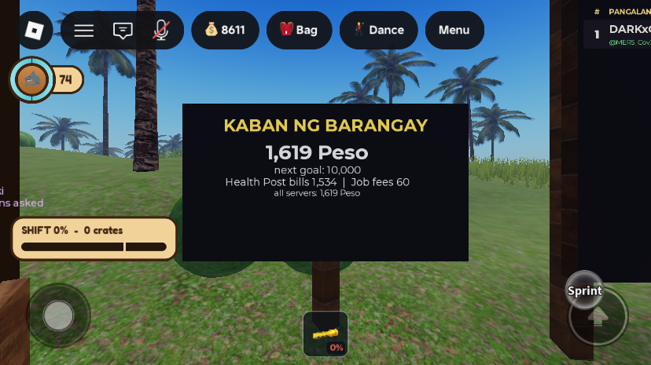
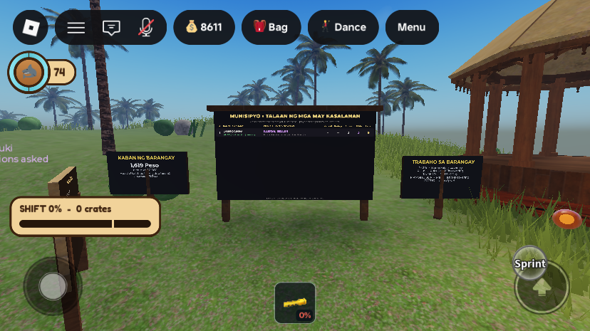

Economy Phase 1: the money rules
What was asked
The owner asked for a plan covering Lung Coral processing, cave changes, a Diver job, the market, role hotbars, shark bait, bodega chests, a tutorial and gamepasses, then accepted every recommendation in it. Phase 0 built the economy adjuster, and the owner accepted its proposed numbers ("I go with your recommendation"). This page is Phase 1, the money rules:
- "Drowned player will cost 15% of their wallet, if this player is big time then the player nurse will get a big amount."
- "The money AI receive like nurse, market, police confiscated item, will be collected on the server overall income", unlocking an event later at a threshold.
- "Glowstick now sell a piece not per pack, it is one of crucial item and we cannot give it for free."
- "Too much amount to give per crate", and "not any player can stock crate, only vendor".
- "Each job should have payment, so player will be needed to pay before they can take the job."
- Palengke prices based on real Philippine prices.
What changed
1. The Kaban ng Barangay (Community Fund)


- New ModuleScript
ServerScriptService.CommunityFundService.Add(amount, source)adds to a per-server total. Every 10,000 Peso (THRESHOLD_STEP) it tells the whole server in chat (new remoteIslandNotice) and fires the newServerStorage.CommunityFundThreshold(level, total). Nothing listens to that signal yet; it is the hook for the future barangay events. - A lifetime all-servers total is kept in the new DataStore
CommunityFund(keylifetime). It is added to withUpdateAsynconce a minute and on close. - Totals are also published as the
ReplicatedStorageattributesCommunityFund,CommunityFundNextandCommunityFundLifetime. - Where the money comes from:
CurrencyService.TrySpendnow sends every spend to the fund unless the source is inPAID_TO_PLAYERS(GiftSent,ToldaBuy,CarrySabotage,NurseFee,DrowningBill). That covers Palengke purchases, bag upgrades, job fees, bangka hire, zipline fares, and bodega upgrades and repairs. - Ronda raids: when the NPC ronda seizes a tolda, the 25% cut that a player officer would have kept goes to the fund (
BlackMarketService.confiscate). A player officer still keeps it. - New board
Workspace.IslaMarahuyo.FundBoard(Post+Board, cloned from the job board's parts, with itsFaceSurfaceGui retitled). It shows the total, the next goal, the top two sources and the lifetime total. The module rewritesFace.Frame.Body(rich text). - Changed from the plan: there is no top-bar counter. The saved UI rule is to leave the top bar untouched, so the fund appears on the board and in threshold announcements only.
2. Drowning costs 15% of the wallet
- In
ReviveService, one Health Post bill replaces both the flat 60/30 nurse and passer-by fees:DROWN_BILL = 0.15of the Peso the diver holds, uncapped. Because it is a percentage, a broke diver never goes into debt. (BreathService's old 15% capped at 25 was dead code; its constants are removed.) - Who keeps the bill:
- a player nurse keeps all of it;
- a passer-by keeps half (
PASSERBY_SHARE); - a fumbled lay-down keeps 60% of that share (
POOR_WORK_RATE); - a bot nurse, a nurse serving a sentence, or coming round alone keeps nothing.
- Anti-farming: a diver is billed at most once every 10 minutes (
BILL_COOLDOWN, saved asprofile.LastDrownBillAt). If a player shark caused the drowning, the carrier's share is halved.SharkPlayerServicenow setsPatingHitAton a lunge victim, andReviveService.Begintreats a hit within 60 s (SHARK_WINDOW) as the cause. - The patient's "done" message names the bill, for example "Nurse Fely brought you round. Health Post bill: 1534 Peso, paid into the Kaban ng Barangay." The ledger line reads "Health Post bill (15% of your wallet)".
3. Glowsticks sold one at a time, and no free gear
ItemConfig.Items.glowstick:bundle = 10removed and the price set to 25 per stick (was 140 per pack of 10). The shop, purchase and bag code already fell back to single items whenbundleis absent.PlayerProfileService:STARTER_KITis now empty (was 3 glowsticks and an oxygen tank), andSTARTING_SHELLSis 750 (was 2000). Saved balances are untouched.- A dropped glowstick is tagged
OwnerId(InventoryService), and only its owner can pick it back up. Anyone else sees "That glowstick marks someone else's trail. Leave it burning." Other dropped gear stays shareable.
4. Job fees, free first job, 5-minute wait between jobs
RoleService.Rolescosts:- Nars 80
- Pulis 120
- Tindero 60
- Mangingisda 100
- Pating 100 (unchanged)
JobFee_<key>, shown as "Job fee: tindero". All fees go to the fund.- First job free, like a first-time job seeker's barangay clearance (RA 11261). This uses
profile.FirstJobTakenand the player attributeFirstJobFree. The board's button reads "TAKE FREE" until then. RECLAIM_COOLDOWNis 300 s (was 90) and now applies to any job after taking or leaving one, tracked in the newwaitUntiltable.Revoke(a poisoned shark) still sets its own shorter wait.- The custody check (jailed, reviving, wanted, in Shipwreck) now applies to every job, because every job has a fee.
RoleHud: every TAKE button shows its price and is green; only the Pating stays red.
5. Crates are the Tindero's, and pay less
VendorService: only a Tindero, or a player serving a Palengke sentence, can restock the 1→2→3 crates. Anyone else is told "Only the Tindero restocks the Palengke crates. Take the job at the Munisipyo board." Pay is now 0 per crate plus 5 per round with no streak (was 3 per crate + 12 + a streak of up to 10).MarketShiftService: a shift pays 250 base + 5 per crate, up to 40 crates, for a maximum of 450 (was 180 + 12 × 40 = 660).QuestService: the daily task "Run 3 market restocks" is removed from the pool, since most players can no longer do it. The pool is index-based, so today's four tasks reshuffle once when this goes live. Progress is keyed by kind and is kept.
6. Prices
| Item | Was | Now | Real PH reference |
|---|---|---|---|
| Glowstick | 140 per pack of 10 | 25 each | 3 (party, bulk) to 75–120 (6" chemlight) |
| Oxygen Tank | 240 | 280 | refill 200–750 |
| Shark Bait | 80 | 120 | galunggong about 234/kg |
| Shark Repellent | 40 | 60 | – |
| Shark Poison | 100 | 250 | none; priced by what it does |
| Lambat | 320 | 600 | small gill net 800–2,500 (estimate) |
| Tolda (from the fixer) | 260 | 500 | tarp 300–800, canopy 2,500–4,500 (estimate) |
| Stone Bodega | 10,000 | 3,000 | – |
| Bangka hire, 10 min (Mahaba) | 180 | 150 | the long hire cost more per minute than the short ones |
Unchanged: battery 90, bags 550 / 1,500 / 3,800, zipline 25, shorter bangka hires, all find sell prices. The axe stays free: every player already owns one, and it will be revisited in Phase 2. Kasama VIP's 2× waits for Phase 9. ItemConfig's PRICING header now explains the scale and points to the adjuster.
All changes
| Instance | Change |
|---|---|
ServerScriptService.CommunityFundService | new ModuleScript, described above |
ServerStorage.CommunityFundThreshold | new BindableEvent, created at runtime by the module |
ReplicatedStorage.Remotes.IslandNotice | new RemoteEvent, created at runtime by the module |
Workspace.IslaMarahuyo.FundBoard | new Model (Post, Board with Face SurfaceGui) at about (-252.4, 28.6, -50.3), same facing as the job board |
ServerScriptService.CurrencyService | edit requires the fund; PAID_TO_PLAYERS; fund routing in TrySpend; ledger labels (DrowningBill, CarrySabotage, BodegaUpgrade, BodegaRepair, JobFee_*); the "suspicious amount" warning now only covers money coming in, and not NurseWork |
ServerScriptService.ReviveService | edit NURSE_FEE and PLAYER_CARRY_FEE replaced by DROWN_BILL, PASSERBY_SHARE, BILL_COOLDOWN, SHARK_WINDOW; new billFor, chargeBill, billLine; payNurse rewritten; bot, player and self-revive paths bill; Begin sets t.sharkCaused; header comments updated |
ServerScriptService.SharkPlayerService | edit sets PatingHitAt on a lunge victim |
ServerScriptService.BreathService | edit dead DROWN_FEE_* constants removed; comment points to ReviveService |
ReplicatedStorage.ItemConfig | edit PRICING header; glowstick bundle removed; prices above; stone bodega 3,000 |
ServerScriptService.PlayerProfileService | edit STARTING_SHELLS 750, STARTER_KIT empty |
ServerScriptService.InventoryService | edit glowstick OwnerId on drop, owner-only pickup |
ServerScriptService.RoleService | edit costs, first job free, RECLAIM_COOLDOWN 300 for any job (waitUntil), JobFee_ source, fee line in the claim message, FirstJobFree attribute on join |
StarterPlayer.StarterPlayerScripts.RoleHud | edit TAKE button text and colour |
ServerScriptService.VendorService | edit Tindero or sentenced only; 0/crate + 5, no streak |
ServerScriptService.MarketShiftService | edit SHIFT_BASE 250, PER_CRATE 5 |
ServerScriptService.QuestService | edit VendorRestock task removed from the pool |
ServerScriptService.BlackMarketService | edit ronda raid cut goes to the fund; comment no longer quotes the old tolda price |
ServerScriptService.BoatRentalService | edit Mahaba 150 |
StarterPlayer.StarterPlayerScripts.NotificationController | edit IslandNotice listener (gold system chat line); daily login says Peso |
ServerScriptService.MonetizationConfig | edit comment only (stone bodega price) |
New profile fields: LastDrownBillAt (unix time) and FirstJobTaken (bool). New player attributes: FirstJobFree and PatingHitAt (server clock). Every edited script was compile-checked with loadstring before saving.
Testing
One solo playtest (account MERS_Cov2, which starts with a large balance from earlier admin grants), ended by kicking the player from the Server. There were no script errors in the output.
- First job free: RequestRole "nurse" gave the role, with the message "Your first job's clearance is free."
FirstJobFreewent to false and the balance didn't change. - 5-minute wait: RequestRole "tindero" straight after was refused: "You changed jobs recently. Wait 292 more seconds before taking the Tindero job."
- Paid fee: after the wait, taking Tindero charged 60 (ledger "Job fee: tindero -60") and the fund rose by 60.
- Drowning bill, bot nurse: DebugDrown with 10,230 Peso. Nurse Fely carried the player in (about 40 s) and billed 1,534 = 15%. The ledger showed "Health Post bill (15% of your wallet) -1534", the fund went to 1,534, the board updated, and the patient saw the bill in the "done" message.
- 10-minute bill cooldown: a second DebugDrown straight after went through Nurse Luz with no bill ("Nurse Luz brought you round.") and no change to the fund.
- Glowstick: RequestItemBuy "glowstick" at the Palengke gave "Glowstick in your bag. -25 Peso." and the fund rose by 25.
- Crates: triggering CrateC's RestockPrompt as a Nars gave "Only the Tindero restocks the Palengke crates…"
- Board: screenshots above. The post first showed through the middle of the board; it was moved 0.5 studs behind it in both the running server and Edit.
Gaps and things to check
- Not tested (needs two players): a player nurse's full share, a passer-by's half, the fumble rate, the shark-caused halving, a ronda raid paying the fund, and the owner-only glowstick pickup.
- The DataStore lifetime total was read and shown (0 at start), but the minute-long flush was not watched in this test. If Studio has API access off, it simply stays at the server total.
- The job board panel and the Palengke glowstick tile weren't screenshotted. Their prompts don't fire from a script in a playtest. The button text change is small; open the board once to check "TAKE FREE" and "TAKE 80".
- The old welcome/tutorial panel still says crates give "a steady Shells payout". It gets replaced in Phase 8.
- No thresholds were crossed, so the 10,000 announcement wasn't seen in play. It uses the same system-chat path as the other notices.
- The playtest's balance changes (drowning bill, glowstick, fee) were saved to the test account's DataStore as usual. No quick-test values were added, and
Bodega.AxeDamage = 20from before is still there, to be restored in Phase 7.